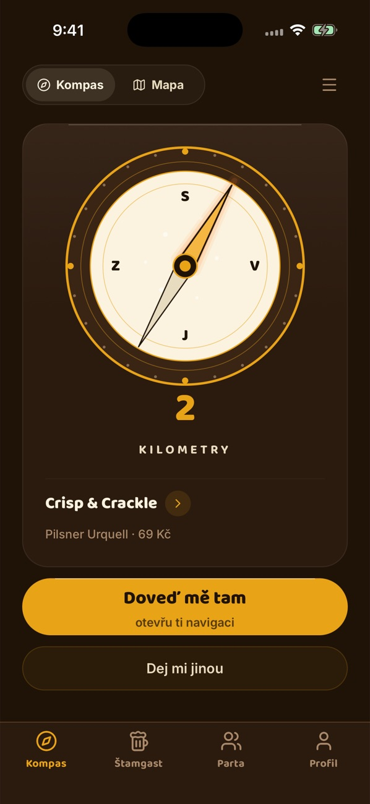
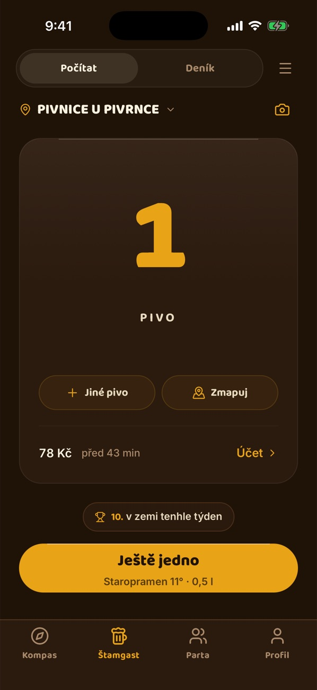
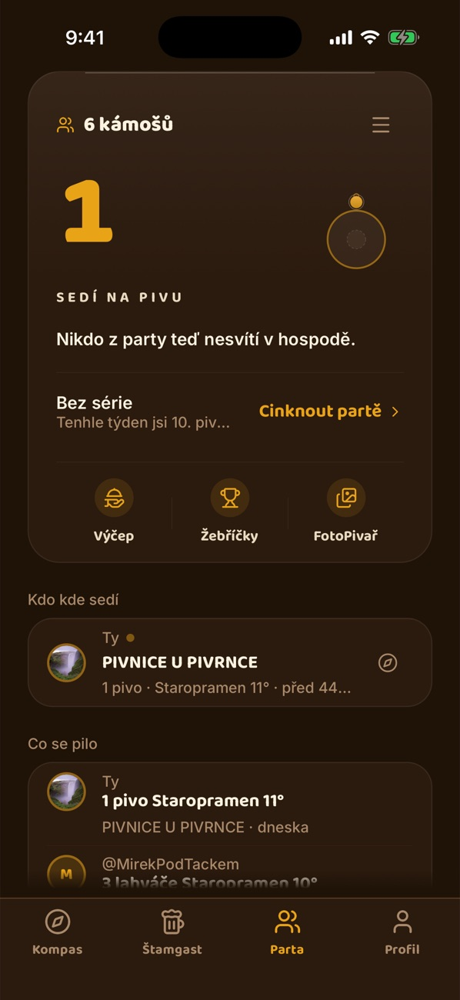
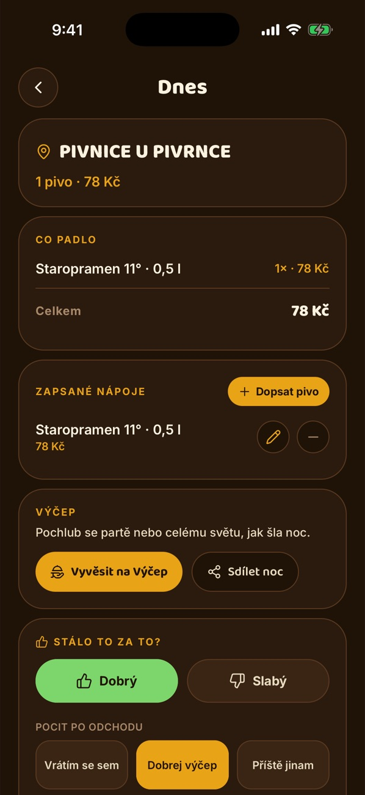

Nejkratší cesta na pivo.
Kompas ukáže směr a vzdálenost k nejbližší hospodě. Pak čárkuješ piva, cinkneš partě a večer se ti sám zapíše do deníku.
Jeden večer
-
Kde sedneme?
Šipka ukáže směr k nejbližší hospodě, jak je daleko a co tam čepujou. Nesedí ti? Ťukni na Dej mi jinou.

-
Ještě jedno
Každé pivo je jedno ťuknutí. Počítadlo hlídá počet i útratu a zápis projde i bez signálu.

-
Cinkni partě
Jdeš na pivo? Cinkni a parta to hned ví. Kámoši kývnou, jestli dorazí.

-
Večer se zapíše sám
Piva, ceny, hospoda i poznámky zůstanou v deníku. Ráno víš, kolik to stálo a jestli se tam vrátíš.

Co ti slibuju
Zdarma a bez reklam
Appku dělám sám a platit za ni nemusíš.
GPS trasu neukládám
Polohu potřebuju jen k hledání hospod kolem tebe. Trasu ani historii polohy si nenechávám.
Funguje i ve sklepě
Pivo zapíšeš i bez signálu. Odešle se, až telefon zase chytne síť.
Česky i anglicky
Jazyk přepneš v Nastavení.